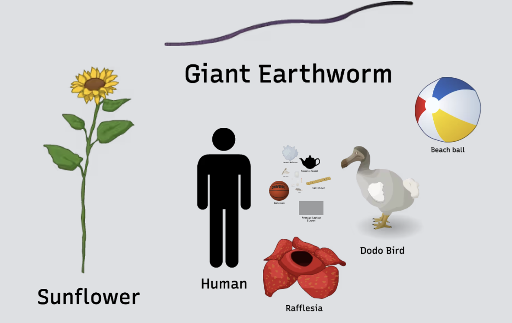

Quantitative Reasoning
1015SCG
Lecture 2

Units of measurement
Units
|
|
Source: A Brief History of the Metric System by Carmen J. Giunta (2023).
Units
|
|
||||||||||||||||||||||||||
Source: A Brief History of the Metric System by Carmen J. Giunta (2023).
Units: Other physical quantities
Any other physical quantities can be written as some combination of these base units, and are sometimes are given their own name.
- $\text{velocity}= \dfrac{\text{distance}}{\text{time}}$ $=\dfrac{\text{m}}{\text{s}}$
- $\text{acceleration}= \dfrac{\text{velocity}}{\text{time}}$ $=\dfrac{\text{m}/\text{s}}{\text{s}}$ $=\dfrac{\text{m}}{\text{s}^2}$
- $\text{force}= \text{mass}\times \text{acceleration}$ $=\text{kg}\times \dfrac{\text{m}}{\text{s}^2}$ $=\text{N}$ $\;\; $(Newton)
- $\text{pressure}= \dfrac{\text{force}}{\text{area}}$ $= \dfrac{\text{N}}{\text{m}^2}$ $= \dfrac{\text{kg}\times \dfrac{\text{m}}{\text{s}^2}}{\text{m}^2}$ $= \dfrac{\text{kg}}{\text{m}\times\text{s}^2}$ $= \text{Pa}$ $\;\;$(Pascal)
- $\text{energy}= \text{mass}\times \text{velocity}^2$ $= \text{kg} \times \dfrac{\text{m}^2}{\text{s}^2}$ $= \dfrac{\text{kg}\times \text{m}^2}{text{s}^2}$ $= \text{J}$ $\;\;$(Joule)
Other sets of units
There are a number of non-SI units accepted for use alongside SI units, e.g.:
- Angle in degrees, minutes and seconds (e.g. latitude and longitude).
- Area in hectares.
- Volumes in litres.
- Times in minutes, hours, days, years.
- Temperature in degrees Celsius.
Other sets of units
People in the 🇺🇸 U.S. uses customary units in daily life (related to the British Imperial system), e.g.:
-
Lengths in inches, feet, yards, miles and area in
acres. - Mass in pounds.
- Temperatures in degrees Fahrenheit (F)
- Ounces (oz) for mass and fluid ounces (fl oz) for volume.
Metric and Imperial system

Image source: Statista: Metric or Imperial? (2019)
Examples
1. The length of the stick is measured to be 70 cm. But you want to
communicate with your American friend. How many inches it is?
Hint: 1 inch = 2.54 cm.
2. The pasture is a rectangle with dimensions of 500 m by 2 km. How
many hectares it is?
Hint: 1 ha = 100 m $\times$ 100 m.
3. An Olympic swimming pool has dimensions 50 m × 25 m × 2 m. How
many liters of water it can fit?
Hint: 1 L = 10 m $\times$ 10 m $\times$ 10 m.
4. The conversion from Fahrenheit to Celsius degrees is
\(^{\circ}\text{C} = \dfrac{5}{9}\left(^{\circ}\text{F}-32\right).\)
Find
(a) \(\,0^\circ\text{F}\) in \(^\circ \text{C},\qquad\)
(b) \(\, 100^\circ\text{F} \) in \(^\circ\text{C},\qquad\)
(c) \(\, -40^\circ\text{C} \) in \(^\circ\text{F}\)
Examples
1. The length of the stick is measured to be 70 cm. But you want to
communicate with your American friend. How many inches it is?
Hint: 1 inch = 2.54 cm.
We need a conversion factor! Since we know that 1 inch = 2.54 cm, then
\( \dfrac{\text{1 inch}}{\text{2.54 cm}} = 1 \) 👈 This is a conversion factor!
Thus we have
\(70 \text{ cm}\) \(=70 \text{ cm} \times 1\) \(=70 \text{ cm} \times \dfrac{\text{1 inch}}{\text{2.54 cm}} \) \(= \dfrac{70}{2.54} \text{ inch}\) \(= 27.56 \text{ inch}\)
Examples
2. The pasture is a rectangle with dimensions of 500 m by 2 km.
How many hectares is it?
Hint: 1 ha = 100 m × 100 m.
Let's start by finding the area in square metres.
First, we knot that \(2\,\text{km} = 2000\,\text{m}\)
Area = \(500 \text{ m} × 2000 \text{ m} = 1{,}000{,}000 \text{ m}^2\)
Now use the conversion factor from m² → ha:
\(1 \text{ ha} = 100 \text{ m} × 100 \text{ m} = 10{,}000 \text{ m}^2\)
\(\dfrac{1 \text{ ha}}{10{,}000 \text{ m}^2} = 1\) 👈 Conversion factor
\(1{,}000{,}000 \text{ m}^2 × \dfrac{1 \text{ ha}}{10{,}000 \text{ m}^2} = 100 \text{ ha}\)
Examples
3. An Olympic swimming pool has dimensions 50 m × 25 m × 2 m.
How many litres of water can it fit?
Hint: 1 L = 10 cm × 10 cm × 10 cm = 1000 cm³ = 0.001 m³.
First, find the volume in cubic metres.
Volume = \(50 × 25 × 2 = 2500 \text{ m}^3\)
Now use the conversion between cubic metres and litres:
\(1 \text{ m}^3 = 1000 \text{ L}\)
\(\dfrac{1000 \text{ L}}{1 \text{ m}^3} = 1\) 👈 Conversion factor
\(2500 \text{ m}^3 × \dfrac{1000 \text{ L}}{1 \text{ m}^3} = 2{,}500{,}000 \text{ L}\)
Examples
4. The conversion from Fahrenheit to Celsius degrees is
\(^{\circ}\text{C} = \dfrac{5}{9}\left(^{\circ}\text{F}-32\right).\)
Find:
(a) \(0^\circ\text{F}\) in \(^{\circ}\text{C},\qquad\)
(b) \(100^\circ\text{F}\) in \(^{\circ}\text{C},\qquad\)
(c) \(-40^\circ\text{C}\) in \(^{\circ}\text{F}\)
(a) For \(0^\circ\text{F}\) in \(^{\circ}\text{C}\): \(\; ^{\circ}\text{C} = \dfrac{5}{9}(0 - 32) \) \(= \dfrac{5}{9}(-32)\) \(= -17.78^{\circ}\text{C}\)
(b) For \(100^{\circ}\text{F}\): \(\;^{\circ}\text{C} = \dfrac{5}{9}(100 - 32)\) \( = \dfrac{5}{9}(68)\) \(= 37.78^{\circ}\text{C}\)
(c) Now convert \(-40^{\circ}\text{C}\) to \(^{\circ}\text{F}\), use the inverse formula: \(^{\circ}\text{F} = \dfrac{9}{5}{}^{\circ}\text{C} + 32\)
Thus \(\; ^{\circ}\text{F} = \dfrac{9}{5}(-40) + 32\) \( = -72 + 32 \) \( = -40^{\circ}\text{F}\)
So, at \(-40^{\circ}\), Celsius and Fahrenheit are equal! ❄️
📝 More practice 😃
- Cheetahs can reach speeds up to 120 km/h.
- How fast is it in m/s?
- What about feet/quarter-hour? (1 foot $\approx$ 30 cm)
- I can paint a wall with the speed of 0.2 $\dfrac{\text{m}^2}{\text{min}}$.
- How long will it take me to paint a 5 m $\times$ 3 m wall?
📝 More practice 😃
- Cheetahs can reach speeds up to 120 km/h.
- How fast is it in m/s?
- What about feet/quarter-hour? (1 foot ≈ 30 cm)
👉 \(120 \text{ km/h} = 120{,}000 \text{ m}/3600 \text{ s} = 33.3 \text{ m/s}\)
👉 \(120 \text{ km/h} = 120{,}000 \text{ m/h} = 400{,}000 \text{ ft/h}\) ⇒ \( 100{,}000 \text{ ft}/ \text{quarted-hour}\)
- I can paint a wall with the speed of 0.2 \(\dfrac{\text{m}^2}{\text{min}}\).
- How long will it take me to paint a 5 m × 3 m wall?
👉 Wall area = \(5\text{ m} ×3\text{ m} = 15 \text{ m}^2\). Then Time = \(\dfrac{15 \text{ m}^2 }{0.2\frac{\text{m}^2}{\text{min}}} = 75 \text{ min} = 1\text{ h }15\text{ min}\)
Final remarks about the SI
|

|
||||||||||||||||||||||||||||||||||||||||||||||||||||
Source: A Brief History of the Metric System by Carmen J. Giunta (2023).
Scientific Notation,
Orders of Magnitude
The decimal system


The decimal system

↓
\(\mathbf 7\times 10 ^3 \) \(+\,\mathbf 5\times 10 ^2 \) \(+\,\mathbf 9\times 10 ^1 \) \(+\,\mathbf 4\times 10 ^0 \) \(+\,\mathbf 1\times 10 ^{-1} \) \(+\,\mathbf 6\times 10 ^{-2} \) \(+\,\mathbf 3\times 10 ^{-3} \)
Really big things
 |
Galactic orbit of our sun: $230\,000\,000 \text{ years}$ $=2.3 \times 10^{8} \text{ years}$ The size of our galaxy: $950\,000\,000\,000\,000\,000\,000 \text{ m}$ $ = 9.5 \times 10^{20}\text{ m}$ Total mass of stars in the universe: $200\,000\,000\,000\,000\,000\,000 \text{ stars}$ $\times$ $2\,000\,000 \,000\,000\,000\,000\,000\,000\,000\,000 \text{ kg}$ $ =\left(2\times 10^{20} \times 2 \times 10^{30} \text{ kg}\right)$ $=2\times 10^{50} \text{ kg}$ |
Really small things
 |
Radius of a helium atom: $0.000000000031 \text{ m}$ $= 3.1 \times 10^{-11} \text{ m}$ Size of a helium nucleus (alpha particle): $0.000000000000000002 \text{ m}$ $= 2 \times 10^{-15} \text{ m}$ Mass of a helium atom: $0.00000000000000000000000000664 \text{ kg}$ $= 6.64 \times 10^{-27} \text{ kg}$ |
Normilised Scientific Notation
$ \pm a \times 10 ^{m}$
- $a$ - is called significand, with $\,1\leq a\lt 10$
- $m$ - is the exponent (integer number)
Normilised Scientific Notation
$ \pm a \times 10 ^{m}$
- $10^{2}$ $=100$
- $10^{3}$ $=1000$
- $10^{n}$ $=1\underbrace{000\cdots000}_{n\ \text{ zeros}}$
- $10^{-2}$ $=0.01$
- $10^{-3}$ $=0.001$
- $10^{-n}$ $=0.\underbrace{000\cdots000}_{n-1\ \text{ zeros}}1$
Writing numbers in normalised scientific notation
Example 1: $142.14$
Move the decimal point to get a number between $1$ and $10$:
$142.14 = 1.4214 \times 10^{2}$
✅ Normalised form: one non-zero digit before the decimal point.
Example 2: $0.0312$
Move the decimal point to get a number between $1$ and $10$:
$0.0312 = 3.12 \times 10^{-2}$
✅ Normalised form: one non-zero digit before the decimal point.
Writing numbers in normalised scientific notation
💻 Calculator/Computer notation
$142.14 = 1.4214 \times 10^{2}$
$\quad \;\,=1.4213\text{E}2$ 👈
$0.0312 = 3.12 \times 10^{-2}$
$\qquad \;\,\;\,=3.12\text{E}-2$ 👈
📝 Write in scientific notation 😃
1. Height of Q1 Tower: $322.5\ \text{m}$
2. Diameter of the Moon: $3\,474\,800\ \text{m}$
3. Average mass of an E.coli cell (wet): $0.000000000001\ \text{g}$
4. Distance between carbon atoms in diamond: $0.0000000001544\ \text{m}$
📝 Write in scientific notation 😃
1. Height of Q1 Tower: $322.5\ \text{m}$
Move decimal to get a number between 1 and 10: $322.5 = 3.225 \times 10^{2}\ \text{m}$
2. Diameter of the Moon: $3\,474\,800\ \text{m}$
$$3\,474\,800 = 3.4748 \times 10^{6}\ \text{m}$$
3. Average mass of an E.coli cell (wet): $0.000000000001\ \text{g}$
$$0.000000000001 = 1 \times 10^{-12}\ \text{g}$$
4. Distance between carbon atoms in diamond: $0.0000000001544\ \text{m}$
$$0.0000000001544 = 1.544 \times 10^{-10}\ \text{m}$$
SI Metric Prefixes |
|
Example using SI Metric Prefixes
|
The distance between carbon atoms in diamond is $\quad 0.0000000001544\ \text{m}$ Let's write this in Ångströms. First, convert to normalized scientific notation $\quad 0.0000000001544\ \text{m} $ $= 1.544 \times 10^{-10}\ \text{m}$ Then, convert to Ångströms (1 Å = $10^{-10}$ m) $\quad 1.544 \times 10^{-10}\ \text{m} = 1.544\ \text{Å}$ ✅ The carbon-carbon distance in diamond is $1.544$ Å |

|
📝 Write using SI Metric Prefixes😃
| p | Å | n | µ | m | cm | d | da | h | k | M | G |
| $10^{-12}$ | $10^{-10}$ | $10^{-9}$ | $10^{-6}$ | $10^{-3}$ | $10^{-2}$ | $10^{-1}$ | $10^{1}$ | $10^{2}$ | $10^{3}$ | $10^{6}$ | $10^{9}$ |
1. Age of a dinosaur fossil: $70\,000\,000\ \text{years}=$ _____ Myears
2. Height of Q1 Tower: $322.5\ \text{m}=$ _____ hm = _____ km
3. Diameter of the Moon: $3\,474\,800\ \text{m}=$ ________Mm
4. Average mass of an E.coli cell (wet): $0.000000000001\ \text{g}=$ _____ pg
📝 Write using SI Metric Prefixes 😃
| p | Å | n | µ | m | cm | d | da | h | k | M | G |
| $10^{-12}$ | $10^{-10}$ | $10^{-9}$ | $10^{-6}$ | $10^{-3}$ | $10^{-2}$ | $10^{-1}$ | $10^{1}$ | $10^{2}$ | $10^{3}$ | $10^{6}$ | $10^{9}$ |
1. Age of a dinosaur fossil: $70\,000\,000\ \text{years}=$ _____ Myears
$\quad 7 \times 10 ^{7} \text{ years}$ $ = 70 \times 10^6 \text{ years}$ $ = 70 \text{ Myears}$
2. Height of Q1 Tower: $322.5\ \text{m}=$ _____ hm = _____ km
$\quad 3.225 \times 10^{2} \text{ m}$ $ = 3. 225 \text{ hm}$ $ = 0.3225 \times 10^{3} \text{ m}$ $ = 0.3225 \text{ km}$
3. Diameter of the Moon: $3\,474\,800\ \text{m} = 3.4748\ \text{Mm}$
4. Average mass of an E.coli cell (wet): $0.000000000001\ \text{g} = 1\ \text{pg}$
Orders of magnitude
